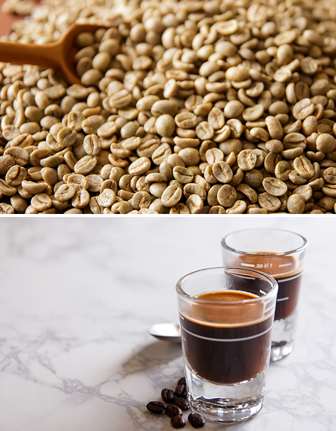

수입부터 블렌딩/로스팅/신선도
유지까지 완벽한 원두
동덕 다방 원두는 브라질 스페셜티 원두를 함께 블렌딩하여 사용합니다.
수확한지 1년 미만 된 아라비카 뉴크롭 생두를 생산국 정부의 수확시기,
품질, 크기 등 엄격한 기준을 토대로 선별하여 수입합니다.
이 까다로운 조건을 통과하여 수입된 원두는 최상의 공간에서 최적의 배전
도로 로스팅 되고, 로스팅이 완료된 원두는 신선도 유지를 위해 2일 내로
빠르게 배송되며, 매장에서는 로스팅 완료 후 2주 내에 사용할 수 있게끔
엄격한시스템이 운영되고 있습니다.
이렇게 만들어지는 동덕다방의 원두는 브라질 원두 고유의 묵직한 바디감
과 아몬드의 고소함, 밀크초콜릿 같은 은은한 단맛이 강점입니다.